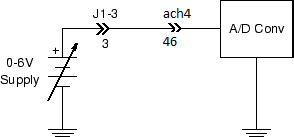
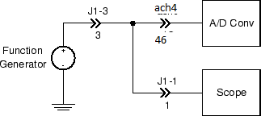

Experiment 3.1
Voltage and Waveform Measurements
Equipment
- Microphone
Part A: Basic A/D Conversion
-
Connect the cable from the DAQ card to J3-1 on the rightmost interface module.
-
Plug your BNC-banana adapter into the 6V supply terminals. There is a bump on one side of the adapter to denote which prong is connected to ground. Be sure to plug this prong into the black terminal of the power supply.
-
Using a BNC patch cable terminated with a BNC-to-banana adapter, connect the 6 V supply output to J1-3.
-
Connect J1-3 (pin 3) to A/D channel 4 (pin 46). (The pin numbers correspond to the upper rows of the breadboard where the interface connections are). The circuit you have just created looks like this:
 Note
With the function generator and oscilloscope, the ground connection to the DAQ card is made automatically. We will not show the DAQ card ground in subsequent drawings.
-
Download Basic_ADC.vi and open in Labview. It should look like this:

Note
Labview programs are called Virtual Instruments (or VIs for short).
-
Start the instrument by selecting
Runfrom theOperatemenu, or by pressing the run button (the small arrow just below the menu bar), or by pressing CTRL-R on the keyboard with the cursor over the panel. -
Vary the power supply voltage and verify that the displayed value changes. Measure the voltage with your DMM and see how the values compare.
-
Move the BNC patch cable from the 6 V supply to the FGEN output. With a second BNC patch cable, connect
CH 1of the oscilloscope to J1-1. Connect the function generator output (pin 3) to the oscilloscope input (pin 1).Verify that you have the following circuit:
 -
Adjust the function generator to produce a \(5 V_{pp}\), 0.5 Hz sine wave. Observe the signal on the Basic ADC display and compare with the oscilloscope output. Make sure clock rate and sample rate are set to 10. Take a Labview screenshot for your lab report.
-
Increase the frequency to 1 Hz. Note that due to the reduced number of samples per cycle, the sinusoidal shape of the waveform is less smoothly defined. Take a Labview screenshot for your lab report.
-
Increase the freqency to 10.00 Hz. Observe the resulting display.
-
Explain why a 10 Hz sine wave, when sampled 10 times per second, appears as a constant (DC) value on the A/D display. Take a Labview screenshot for your lab report. What does an 11 Hz sine wave look like under the same conditions?
-
Increase the sample and clock rate to 100. Observe the resulting display. Take a Labview screenshot for your lab report. Comment on how the Labview waveform changes with increasing sampling and clock rate.
-
Stop the Basic ADC program by pressing the red
STOPbutton.